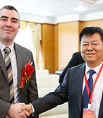
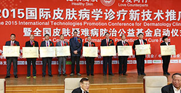
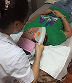
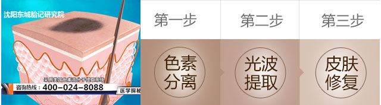
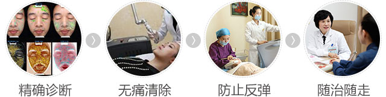
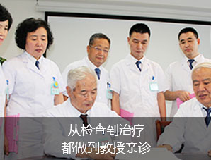
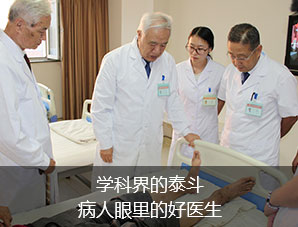

024-28661333连线专家
-
1
胎记无害，不需要治疗
-
2
选择疗法，陷入误区
-
3
选择医院，陷入误区
咨询热线：024-28661333
TIPS：胎记不能自行消退，早发现早治疗才是正确选择！
- 
-
大会简介
继2015年北京国际胎记新技术推广大会后，“SR纳米光波治疗技术 ”被广大胎记患者认可，康复率大大提升。为让更多胎记患者受益，东城医院特开展“2016国际胎记新技术成果报告会”。同时为广大患者带来福利，胎记费用援助50%。
我要咨询 - 
SR纳米光波体系•全面祛除胎记
- 适合病种太田痣、鲜红斑痣、咖啡斑、雀斑、毛痣、血管瘤、酒糟鼻等
- 治疗设备四维细胞治疗仪 Alex TriVantage治疗系统
- 治疗优势智能定位 | 多维光波 | 不留疤痕 | 随治随走 | 康复快速
咨询热线：024-28661333
咨询热线：024-28661333
SR纳米光波技术
 定制祛胎记方案- 
- 


- 就诊姓名： ※必填
- 就诊电话： ※必填
- 就诊时间： ※必填
- 病种类型：